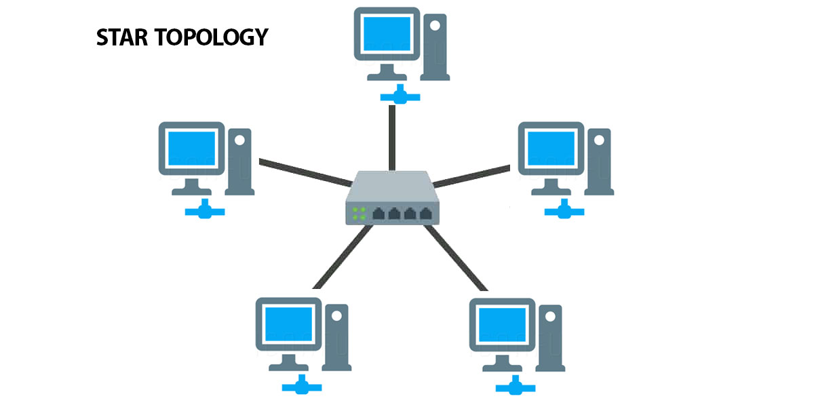

Star
Setiap perangkat terhubung ke satu titik pusat. Pada LAN kabel, titik pusat biasanya switch; siapkan switch, kabel UTP, dan kartu jaringan (NIC) pada tiap komputer. Jika satu kabel ujung putus, biasanya hanya perangkat itu yang terputus. Jika switch pusat mati, koneksi melalui switch tersebut ikut terganggu.
